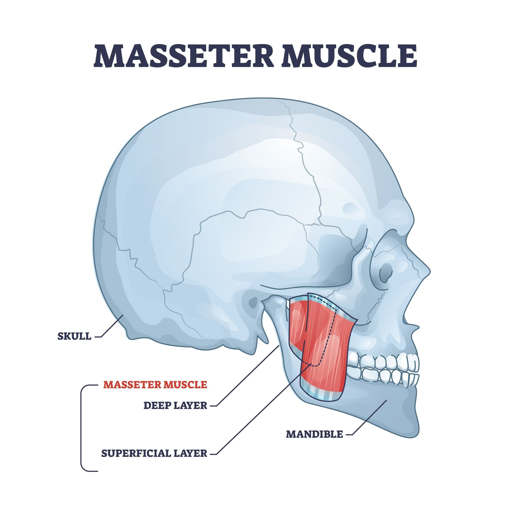

How to Improve Your Jawline Naturally

A strong jawline is a key feature of an attractive face. It conveys confidence, sharpness, and masculinity. While genetics play a role in defining your jaw, you still have some control over its appearance. This article will help you understand what makes a jawline attractive, whether you can enhance it naturally, and how to achieve noticeable improvements. Everything here is science-backed and tested in real life, so you won’t have to worry about ineffective methods. We've filtered out the noise to bring you the most effective techniques.
What Makes a Jawline Attractive?
A well-defined jawline is shaped by three main factors:
- Sharpness – A chiseled jawline is primarily determined by low facial fat.
- Masseter Muscle Development – A strong jaw looks even better with well-developed masseter muscles, giving you a sculpted look.
- Forward Facial Growth – The ideal combination of sharpness, muscle development, and forward growth creates model-tier facial aesthetics.
1. Increasing Jawline Sharpness (Reducing Fat & Debloating)
Losing Fat for a Sharper Jawline
Your jaw’s sharpness is primarily dictated by how much fat is stored in your face. To achieve a sharper jawline, you need to reduce overall body fat since spot reduction isn’t possible. Here’s how:
- Calorie Deficit: Eat fewer calories than your body needs to maintain weight. A 200–500 calorie deficit is ideal.
- Strength Training: Building muscle increases metabolism, helping you burn fat more efficiently.
Debloating for a More Defined Jawline
- Reduce Sodium Intake: Avoid processed foods to minimize water retention.
- Increase Potassium Intake: Eat foods like bananas and spinach to balance sodium levels.
- Stay Hydrated: Drink 2–3 liters of water daily.
- Limit Alcohol & Sugar: Reduces inflammation and puffiness.
- Improve Lymphatic Drainage: Massage your jawline with upward strokes.
- Prioritize Sleep: 7–9 hours of sleep prevents puffiness.
2. Developing the Masseter Muscle for a Stronger Jawline

The masseter muscle defines your lower face. Strengthening it adds structure, making your jawline appear more masculine.
Best Ways to Grow Your Masseter Muscle
- Eat Hard Foods: Chew fibrous foods like carrots, nuts, and lean meats, this can provide the masseter muscleswith safe and proper resistancefor optimal growth. Also maintaining a proper posture while eating and chewing your food thoroughly befoe swallowing can maximise the masseter muscle growth.
- Chew Gum: Tough gums like mastic gum provide better resistance and faster results.
- Improve Swallowing Technique: Use your tongue instead of cheek muscles when swallowing. Instead of sucking the food using the buccinator or cheek muscles, push the food with the help of your tongue to the back of your mouth and try to swallow it without moving any of your facial muscles.This will not only deactivate your buccinator muscles but shall also shift the load to your masseter muscles.
3. Forward Facial Growth (Maximizing Jaw Development)
How to Encourage Forward Growth
- Practice Mewing: Keep your tongue on the roof of your mouth provides the maxilla with slight and constant pressure which not only promotes forward maxillary growth but also highlights your cheekbones more making your face look more chiseled.
- Maintain Good Posture: Keep your head aligned with your spine and avoid the forward head posture as it can inhibit forward growth, instead keeping your chin tucked slightly with a straight back and shoulders rolled slightly backward can help promote forward growth.
- Perform Chin Tucks: 4 sets of 12 reps of chin tucks daily improve jaw positioning. Perform the tucks by standing against a wall with your back touching the wall completely and your shoulders rolled out. tuck your chin whie keeping your back intact with the wall, apply slight pressure to tuck your chin further behind and hold for 5 seconds, release and repeat. this exersice shall not only promote forward growth but also strengthens your neck muscles making it look bigger and perhaps increasing your attractiveness
Conclusion
Improving your jawline naturally is a combination of fat loss, muscle development, and proper facial posture. While results take time, consistency with these techniques will lead to noticeable improvements. In upcoming articles, we’ll dive deeper into forward growth and other advanced techniques for enhancing facial aesthetics.
Stay disciplined, and your efforts will pay off!